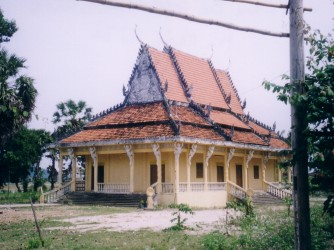
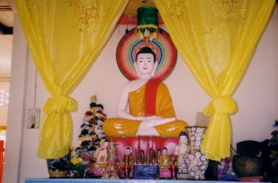
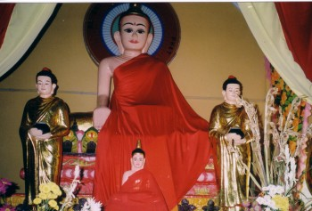
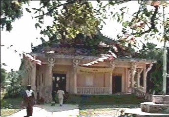
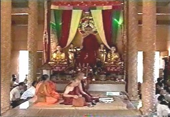
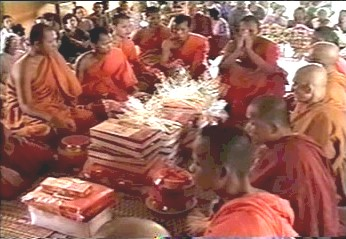
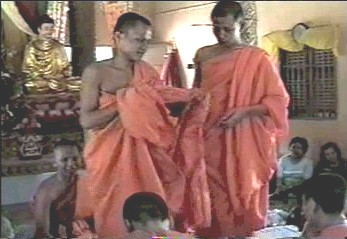

|
BuddhaSasana Home Page |
Vietnamese, with Unicode Times font |
Chùa
Ba Trại
Savanara
Hòn Chông, Hà Tiên, Kiên Giang
|
 |
|
|
 |
 |
Source: Bình Anson, 11-2003
|  |  |
|  |  |
Source: Bình Anson, 01-2004
[Hình
ảnh Phật giáo][Thư Mục]
last updated: 17-01-2004